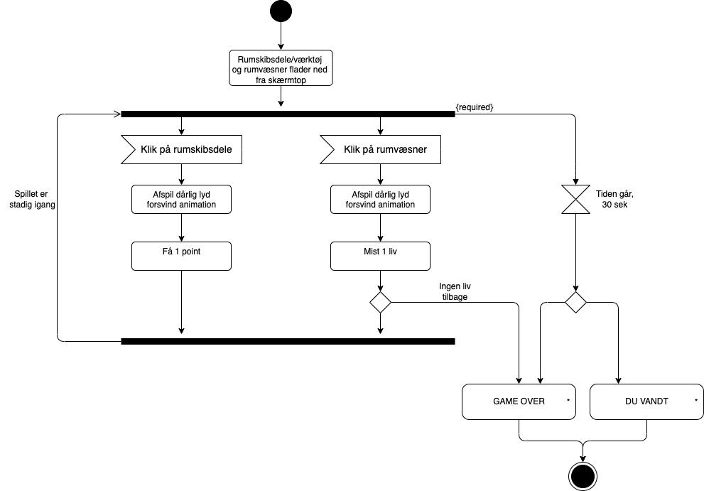
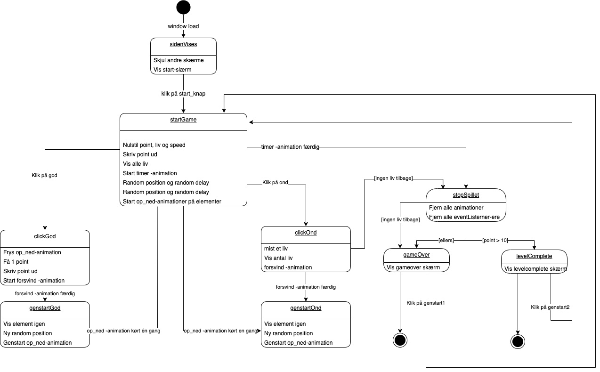
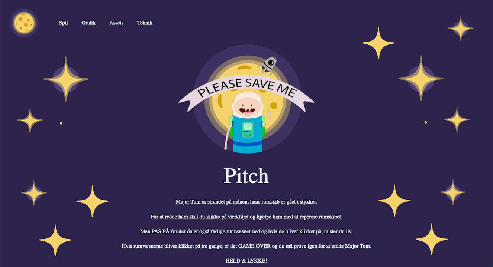
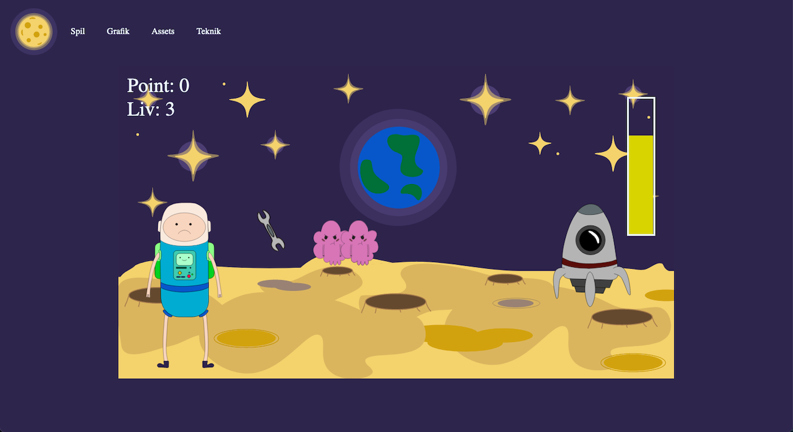

Grundlæggende Animation
I tema 4 lærte vi for første gang om JavaScript, som bruges til at kode avancerede og dynamiske websites. Det bruges også til at lave interaktive elementer som burgermenu, slideshows etc.
Jeg brugte JavaScript sammen med CSS til at skabe et klik spil, vi skulle selv designe alle elementer til spillet og kode spillet fra bunden. Vi lærte at lave aktivets- og statemachine-diagrammer som bruges til at planlægge komplicerede interaktive flow.

Aktivitetsdiagram
Et aktivitetsdiagram bruges til at beskrive aktiviteter som består af detaljeret handlinger og beslutninger. handlingerne udføres i en bestemt rækkefølge men der sker ikke altid det samme hver gang aktiviteten udføres.
Statemachinediagram
Et statemachinediagram er en mere detaljeret udgave af et aktivitetsdiagram, men de samler flere aktiviteter i hver deres states. Et program er i en state eller tilstand når der udføres de samme ting igen og igen indtil der ker noget.
Temaopgave
I mit spil valgte jeg et rum tema baseret på tegneserien adventure time. Jeg startede med at lave skitser af mine figurer og min baggrund, derefter brugte jeg Adobe Illustrator til at tegne alt indholdet i mit spil. Jeg brugte JavaScript til at få mine UI-elementer til at bevæge sig.
Klik for at se spillet  